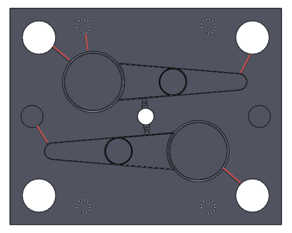

4. UYGULAMA
Çalýþmanýn þimdiye kadar olan kýsmýnda genel olarak bir plastik enjeksiyon kalýbýný tanýmaya çalýþtýk. Kalýp nedir, ne iþe yarar ve çalýþma sistemi nedir gibi sorularýmýza yanýt aradýk .Kalýbýn fonsiyonel bölümlerini, bu dölümlerin elmanlarýný, bu elemanlarýn iþlevlerini incelemeye çalýþtýk, bu kalýplarda kullanýlan plastik malzemeleri, bu malzemelerin özelliklerini ve kullaným alanlarýna deðindik. Bölüm 2 de ise Bölüm 1’de bahsettiðimiz kalýbý oluþturan fonksiyonel bölümleri, sistemleri inceledik. Kalýp tasarým aþamalarýna, kalýp tasarýmýnda dikkat edilmesi gerekenler hususlarý. Kalýbta olan yolluk sistemini, ititci sistemini, soðutma sistemini, bu sistemlerin çeþitlerini, seçimini etkileyen faktörleri inceledik. Çalýþmamýzýn bu aþamasýnda ise bu bilgilere dayanarak baþtan sona bir kalýbýn tasarýmýný yapacaðýz. Üretilmesine karar verdiðimiz bir numuneyi ele alýp, bilgisayar destekli tasarýmýndan itibaren baþlayarak, sýrasýyla malzeme seçimi, kalýplandýrýlmasý, itici sistemi yolluk sistemi soðutma sistemlerine beraber karar verip çalýþmamýzý pratikle birleþtirmiþ olacaðýz.
4.1 Genel Giriþ
Kalýp tasarýmý ilk önce üretimi yapýlacak parçanýn bilgisyar ortamýnda CAD programý ile katý modelini oluþturulmasý ile baþlar. Bilgisayar destekli kalýp tasarýmý, kalýbýn oluþturulmasýnda büyük kolaylýklar saðlamaktadýr.Kalýp üretim sürecine geçmeden önce sanal ortamda tüm kontroller daha saðlýklý bir þekilde yapýlmktadýr. Böylece üretmide karþýlaþabilecek sorunlar minumuma indirilmektedir.
4.2 Kalýplanacak Parça
Resim 1’de de görülen parça, düzlem taþlama tezgahlarýnda kullanýlan, atýk talaþlarýn uzaklaþtýrýldýðý tamburun koludur. Parça çizimi ve ölçüleri EK 1 de verilmiþtir.
Resim 1 Kalýplanacak Parça Persfektif Görünüþleri
4.3 Malzeme Seçimi ve Parçanýn Fiziksel Özellikleri
Parça kullanýldýðý yerde devamlý kuvvet etkisi aldtýnda kaldýðý için yorulma olmaktadýr sýk sýk kýrýlmaktadýr. Parçanýn yorulma ile kýrýlmamasý için parçanýn zayýf bölgeleri dahada güçlendirilmiþtir. Bu parça ABS malzeme seçimi yaptýk.Çünkü ABS malzeme yüksek çekme dayanýmý, yüksek darbe dayanýmý göstermektedir.Ayrýca parçanýn kullanýldýðý yerin nemlidir ve ABS malzemenin ise nemden etkilenmez.
ABS Malzeme Özellikleri
- Yoðunluðu 1,04 g/cm³’tür.
- Mekanik özelliði çok iyidir.
- Çekme dayanýmý 560 kg/cm², cam elyaf katkýlý 773 kg/cm², karbon elyaf katkýlý 1125 kg/cm², ABS-PC alaþýmýnda 635 kg/cm²’dir.
- Sertlik darbe dayanýmý ve uzama deðerleri de bu deðiþime paralel olarak artar veya azalýr.
- Ýyi bir yüzey kalitesine sahiptir.
- Aþýnmaya karþý direnci fazladýr.
- Ýyi bir elektrik izolasyon malzemesidir.
- Su ve rutubetten etkilenmez.
- Nem alma özelliðinden dolayý kullanmadan önce 2 saat kadar 80-90 Cº’de kurutulur.
4.4 Parçanýn Kalýplandýrýlmasý
4.4.1. Kalýp Ayrým Çizgisini Belirlenmesi
Kalýp ayýrým çizgisi imalini düþünüldüðü plastik parçanýn kalýbýnýn diþi ve erkek kalýp boþluklarýnýn birleþtiði çizgidir. Kalýp ayrým cizgizi parçanýn estetik görünümünü etkilemeyecek þeilde belirlenmelidir.Bunun için parçanýn kullnýldýðý yere bakýlmalýdýr. Parçamýz bir makine parçasý olduðu için estesik olarak kalýp ayrým çizgisini yerin önemli deðildir. Fakat kalýp ayrým çizgisi, kalýp açýlma yönüne göre ayarlanmasý gerekmektedir. Resim 2’de parçamýz için belirlediðimiz kalýp ayrým çizgisi görünmektedir.
Resim 2 Kalýp Ayrým Çizgisinin Görünmesi
4.4.2 Diþi ve Erkek Çekirdeðin Oluþturulmasý
Diþi çekirdek ürünü dýþ yüzeylerini oluþturur. Tek parça veya birkaç parçadan meydana gelebilir. Daha sonra bu çekirdekler plakaya yerleþtirilir erkek ve diþi plaka meydana gelir. Resim 3’de görünen diþi çekirdektir. Ürünün dýþ yüzeylerini oluþturur. Resim 4’de görünen ise erkek çekirdek resimde de görülen delik gibi iç yüzeyleri oluþturur.
Resim 3 Diþi Çekirdek
Resim 4 Erkek Çekirdek
4.4.3 Göz sayýsýnýn Belirlenmesi ve Parçanýn Kalýpa Yerleþtirilmesi
Göz sayýsý kalýbýn bi seferde kaç ürün çýkaracaðýný belirtir. Göz sayýsýnýn belirlenmesinde parça kullaným adedi, parça geometrisi, kalýp ebatlarý, kalýp maliyeti, kalýp çalýþma þekli gibi faktörler göz önüne alýnmalýdýr. Gereksiz geniþ alana yerleþtirme fazla malzeme israfý oalcaðýndan malyetimiz arttýracak, kalýp boyutlarýný büyüteceðinden kalýbýn gereðinden fazla aðýr olmasýna neden olacak ve soðumayý olumsuz etkileyecektir.Aksi yönde çok dar alana kalýbý skýþtýrmakta ileride soðutma sistemi veya itici sisteminni tasarýmýnda yer darlýðýna neden olacak kalýbýn yüzey alaný dar oluðu için enjeksiyon basýnçlarýna daha az dayaným göstercektir. Bizim parçamýz çok miktarda ihtiyaç duyulan bir parça olmadýðý için ve parça geometrisi göz önüne alýndýðýnda daha dengeli bir daðýlým olmasý için Resim 5’de görüldüðü gibi 2 gözlü olarak yerleþtirilmiþtir.
Resim 5 Göz Adedi ve Ürünün Kalýba Yerleþimi
4.4.4 Kalýbýn Boyutlandýrýlmasý
Göz adedini belirledikten ve ürünün kalýba yerleþtirilmesini yaptýktan sonra kalýbý boyutlandýrýyoruz. Kalýbý boyutlandýrmaktaki amacýmýz. Diþi ve erkek plakanýn enini, boyunu ve yüksekliðini tayin etmektir. Çünki kalýb boyumuz itici isitemin tasarýmýnda kullanýlacak olan standar kalýp elemanlarýn tercihinde gerekli olacaktýr.
Ürünün kalýba yerleþtirdikten sonra EK 2 deki gibi standart kalýp ölçüleri kataloðundan parça ile dýþ kenarlara arasýnda minumun 20 mm kalacak þekilde kalýp boyu seçilmelidir. Seçim yaparken ileriki aþamalarý göz önünde bulundurmalýyýz. Bunlar kolon pimleri, geri itici delikleri, baðlantý delikleri vb. Tasarýmýný yaptýðýmýz kalýbýn boyutlarýný 156x156 olarak belirledik.

Resim 6 Kalýbýn Boyutlandýrýlmasý
4.4.5. Yolluk ve Yolluk Giriþ Dizaynýn Belirlenmesi
Yolluk ve yolluk giriþi ergimiþ plastiðin kalýp boþluðuna kadar gitmesini saðlar. Yolluk tasarýmýna daha önceki bölümde deðinmiþtik. Bu tasarýmda üretim maliyetlerinin düþmesi açýsýndan ve yine ürün adedi fazla olmayacaðý için düz yolluk kullanýlmasý daha uygundur. Soðuk yolluk ile merkezden 2 göze daðýlým yapýlacaktýr. Parça Estetiði fazla ön planda olmadýðý için giriþ parça kenarýndan kenar giriþ belirlenmiþtir. Resim 6’da yolluk giriþ görünmektedir.
Resim 7 Yoluk Giriþi
4.4.6. Ýtici Sisteminin Belirlenmesi
Ýtici sistemi, parça estetiði, parça geometrisi, parça boyutlarý gibi faktörlere baðlýdýr. Burada parçamýzýn geometrisi düz ve dar olduðu için pim iticili sistem için daha uygundur. Pim iticilerin itme yerleri ve sayýlarý belirlenirken parçanýn kalýpa daha fazla yapýþan yerleri, feder gibi yerler belirlenmelidir. Resim 7’de de görüldüðü üzere iticiler parçanýn daha çok kenar ksýmlarýna yerleþtirilmiþtir ve parça baþýna 7 adet itici kullanýlmýþtýr.
Resim 8 Ýtici Yerlerinin Görünümü
Ýtici sistemi içinde yolluk çekici ve geri itici bulunmaktadýr. Yolluk çekici; yolluk burcu içinde gelen ve soðuyan yolluðu çekerek hem ürünün hemde yollluðun erkek tarafýnda kalmasýný saðlamaktadýr. Geri itici; iticiler parçayý kalýptan ayýrýrken iticlerle beraber hareket eder. Kalýp tekrar kapandýðýnda diþi plakanýn dayanmasýyla itici plakanýn geri gitmesini saðlar. Ýtici pimlerde itici plaka üzerine baðlý olduðundan pimler eski haline geri gelmiþ olur.
Resim 9 Geri itici ve Yolluk Çekicinin Görünümü

Resim 10 Ýtici Sisteminin Genel Görünümü
4.4.6.1. Ýtici Pimlerin Boyutlandýrýlmasý ve Kullanýmý
Ýtici pimler günümüzde istenilen çaplara göre hazýr olarak satýlmaktadýr. Üretilecek parçanýn et kalýnlýðýna ve itme mesafesine göre itici çapý seçilmelidir.Daha sonra itici boylarý istenilen seviyeye getirilerek kullanýlabilir.
4.4.6.2. Ýtici Plakalarýn Boyutlandýrýlmasý ve Kullanýmý
Kalýp ölçü ve ebatlarý günümüzde standartlaþmýþtýr. Üst itme plakasý kalýnlýðý 14mm alt itme plakasý kalýnlýðý 17 olmaktadýr. En ve boylarý kullandýðýmýz standart kalýp ölçülerine göre deðiþmektedir. EK 2’de standart kalýp ölçülerini görebilirsiniz. Üst itme plakasýna iticilerin yuvalarý açýlmalýdýr. Bunlarýn mesafesi erkek plakadan alýnarak CNC tezgahýnda hassas bir þekilde açýlmalýdýr aksi halde delik eksenleri kaçýk olabilir.
4.4.7 Soðutma Sisteminin Belirlenmesi
Ergimiþ halde plasttiðin kalýp içinde sertleþmesi ve istenilen þekli alabilmesi için soðutulamsý gerekmektedir. Bu da soðutma sistemi ile olmaktadýr.
4.4.7.1 Diþi Plakanýn Soðutulmasý
Parçamýz düzlemsel olmadýðý ve derin dairesel kesitler olduðu için çekirdek soðutma yöntemini kullanmamýz gerekmektedir. Resim 11’de diþi plakada derin çekirdek için yapýlmýþ soðutma sistemi görülmektedir.
Resim 11 Derin Çekirdek Soðutma
Bu tür derin çekirdek soðutmalarda çekirdek etrafýna derinliðine yakýn belli bir mesafeye kadar delikler açýlýr. Deliklerden birine plakanýn yanýndan giriþ baþka bir deðileðede çýkýþ içini yandan delik delinir. Deliker arasýnda su geçiþini saðlamak için üst kýsýmdan belli bir miktar frezede iþlenmesi gerekmektedir.Fakat Resim 12 deki simülasyonda görüldüðü üzere suyun deliklere girmeden bu açýlan kýsýmdan gittiði görülmektedir
Resim 12 Soðutma Simülasyonu
Bunu çözmek için deliklerin alt kýsmý boþ kalacak þekilde bakýr levhalar yerleþtirmke gereklidir.Böylece su üstten geçemeyecek mecburen deliði dolaþacaktýr.Resim 13’de görülmektedir.
Resim 13 Soðutma Simülasyonu
4.4.7.2 Erkek Plakanýn Soðutulmasý
Erkek plakada derin olan iç çekirdek ayný yöntemle soðutulmuþtur.
Resim 14 Erkek Plaka Soðutma
4.4.8 Standart Kalýp Elemanlarýnýn Belirlenmesi
4.4.8.1 Kolon Pimlerinin Belirlenmesi
Kolon pimleri kalýp boyutuna göre çapý standart olarak belirlenmiþtir.
Ek 2 de seçilen kalýp boyutuna göre kolon pimi çapý verilmektedir. EK 3 te ise kolon pimi çapýna göre standart boylar verilmiþtir.
4.4.8.2 Baðlantý Cývatalarýn Belirlenmesi
Baðlantý cývalatalarýnýn çapý Ek 2’de kullanýlan kalýp boyutuna göre standart olarak verilmektedir.
4.4.8.3 Konik Kitlemenin Belirlenmesi
Konik kitleme kalýp her kapandýðýnda kalýbýn ayný merkezde olmasýný saðlar, karþýlýklý diþi ve erkek plaka üzerine açýlan yuvalara oturtulan konik kitlemeler, biribirini tam karþýlayarak eksenel tamlýk saðlarlar. EK 4'te standart konik kitleme ölçüleri verilmiþtir.
Konik kitlemenin ölçüleri standarttýr. Kalýp boyutlarýna göre kalýpçý tarafýndan istenilen ölçüde tercih edilir.
4.5 Kalýp Elemanlarýnýn Ýmalat Aþamalarý
4.5.1 Diþi Plakanýn Ýmalatý Aþamalarý
EK 5’te ölçüleri verilen diþi plakanýn CAD programýnda oluþturulduktan sonra CNC tezgahýnda önce kalýp boþluðu iþlendi.
Resim 15 Diþi Plaka Ýmalat Aþamasý 1
Daha sonra kolon pim delikleri delindi ve Rayba çekildi.
Resim 16 Diþi Plaka Ýmalat Aþamasý 2
Daha sonra yolluklar iþlendi.
Resim 17 Diþi Plaka Ýmalat Aþamasý 3
Diþi Plaka soðutma sistemi delikleri iþlendi. Derin çekirdek olduðu için çekirdeðin etrafýna delikler delindi. Delikler etrafýna kanal açýldý. Kanaldan su kaçaðýna önlemek anmacýyla oring yuvalarý açýldý.
Resim 18 Diþi Plaka Ýmalat Aþamasý 4
Son olarak kalýp baðlantý delikleri delindi, yandan soðutma delikleri delindi ve bakýrlar çakýldý
Resim 19 Diþi Plaka Ýmalat Aþamasý 5
Resim 20 Diþi Plaka Üretimden Sonra
Resim 21 Diþi Plaka Arka Kýsmý, Delikler Etrafýna Açýlan Kanal
Resim 22 Oringler ve Bakýr Parçalar
|

{kind=link}